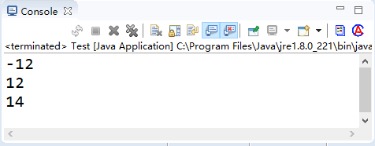
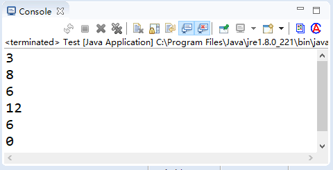

首页 > Java教程 > Java程序设计基础
Java算术运算符
运算符丰富是 Java 语言的主要特点之一，它提供的运算符数量之多，在高级语言中是少见的。
Java 语言中的运算符除了具有优先级之外，还有一个结合性的特点。当一个表达式中出现多种运算符时，执行的先后顺序不仅要遵守运算符优先级别的规定，还要受运算符结合性的约束，以便确定是自左向右进行运算还是自右向左进行运算。这些运算符按照操作数的数量可以分为单目运算符、双目运算符和三目运算符。
最基本的运算符包括算术运算符、赋值运算符、逻辑运算符和关系运算符等，本文将详细介绍算术运算符。
Java 中的算术运算符主要用来组织数值类型数据的算术运算，按照参加运算的操作数的不同可以分为一元运算符和二元运算符。
表 1 中，-a 是对 a 取反运算，a++ 或 a-- 是在表达式运算完后，再给 a 加一或减一。而 ++a 或 --a 是先给 a 加一或减一，然后再进行表达式运算。
输出结果如下图所示：
算术运算符都是双目运算符，即连接两个操作数的运算符。优先级上，*、/、％ 具有相同运算级别，并高于 +、-（+、- 具有相同级别）。例如：
例如：
①int x=2,y=1; 表达式 y/x 的结果是 0。
②float x=2.0f; int y=1; 表达式 y/x 的结果是 0.5。
在 ① 中整型变量 x 和 y 相除，其结果仍为整型数据 0；在 ② 中由于两个不同类型的数据进行运算，此时首先要进行类型转换，会把 int 型的 y 转换成与 x 一样的 float 型，然后相除，最终结果为 float 类型的数字 0.5。
【例1】编写一个程序，输出不同类型的两个数，执行相加、相减、相乘、相除和求余后输入结果。
实现代码如下：
从输出结果中可以看到，整数之间的运算结果只保留整数部分，浮点型运算时保留 6 位小数部分，双精度运算时则保留 16 位小数部分。
注意：Java 语言算术运算符的优先级是先乘除后加减。例如在表达式“a-b*c”中，b 的左侧为减号，右侧为乘号，而乘号优先级高于减号，因此该表达式可以转换为“a-(b*c)”。
如果在一个表达式中的多个算术运算符的优先级别相同，例如“a-b+c”，此时将按照运算符的结合方向决定顺序。算术运算符的结合方向都是“从左至右”，即先左后右。因此 b 先与减号结合，执行“a-b”的运算，再执行加 c 的运算。
示例代码如下：
上述例子分别对整型进行了+=、-=、*=、/= 和 %= 运算，具体语句不再赘述。
Java 语言中的运算符除了具有优先级之外，还有一个结合性的特点。当一个表达式中出现多种运算符时，执行的先后顺序不仅要遵守运算符优先级别的规定，还要受运算符结合性的约束，以便确定是自左向右进行运算还是自右向左进行运算。这些运算符按照操作数的数量可以分为单目运算符、双目运算符和三目运算符。
最基本的运算符包括算术运算符、赋值运算符、逻辑运算符和关系运算符等，本文将详细介绍算术运算符。
Java 中的算术运算符主要用来组织数值类型数据的算术运算，按照参加运算的操作数的不同可以分为一元运算符和二元运算符。
一元运算符
算术一元运算一共有 3 个，分别是 -、++ 和 --。具体说明参见表 1。| 运 算 符 | 名 称 | 说 明 | 例 子 |
|---|---|---|---|
| - | 取反符号 | 取反运算 | b=-a |
| ++ | 自加一 | 先取值再加一，或先加一再取值 | a++ 或 ++a |
| -- | 自减一 | 先取值再减一，或先减一再取值 | a-- 或 --a |
表 1 中，-a 是对 a 取反运算，a++ 或 a-- 是在表达式运算完后，再给 a 加一或减一。而 ++a 或 --a 是先给 a 加一或减一，然后再进行表达式运算。
int a = 12; System.out.println(-a); int b = a++; System.out.println(b); b = ++a; System.out.println(b);上述代码第 2 行是 -a，是把 a 变量取反，结果输出是 -12。第 4 行代码是先把 a 赋值给 b 变量再加一，即先赋值后 ++，因此输出结果是 12。第 6 行代码是把 a 加一，然后把 a 赋值给 b 变量，即先 ++ 后赋值，因此输出结果是 14。
输出结果如下图所示：

图 1 输出结果
关于 ++ 和 --，可直接参考《Java自增和自减运算符（++和--）》一节。
图 1 输出结果
二元运算符
Java 语言中算术运算符的功能是进行算术运算，除了经常使用的加（+）、减（-）、乘（*）和除（\）外，还有取模运算（％）。加（+）、减（-）、乘（*）、除（\）和我们平常接触的数学运算具有相同的含义。具体说明参见表 2。| 运 算 符 | 名 称 | 说 明 | 例 子 |
|---|---|---|---|
| + | 加 | 求 a 加 b 的和，还可用于 String 类型，进行字符串连接操作 | a + b |
| - | 减 | 求 a 减 b 的差 | a - b |
| * | 乘 | 求 a 乘以 b 的积 | a * b |
|
/
|
除 | 求 a 除以 b 的商 | a / b |
|
%
|
取余 | 求 a 除以 b 的余数 | a % b |
算术运算符都是双目运算符，即连接两个操作数的运算符。优先级上，*、/、％ 具有相同运算级别，并高于 +、-（+、- 具有相同级别）。例如：
int a = 4, b = 2, c = 3; int d = a * (b + c) % c;这种运算规则与数学运算中的规则是相同的。首先计算赋值符号（=）右边配对的括号内的值，其次按从左向右的结合方向计算乘法，最后做求余运算，表达式的结果为 2， 然后把 2 赋值给 d。
例如：
①int x=2,y=1; 表达式 y/x 的结果是 0。
②float x=2.0f; int y=1; 表达式 y/x 的结果是 0.5。
在 ① 中整型变量 x 和 y 相除，其结果仍为整型数据 0；在 ② 中由于两个不同类型的数据进行运算，此时首先要进行类型转换，会把 int 型的 y 转换成与 x 一样的 float 型，然后相除，最终结果为 float 类型的数字 0.5。
【例1】编写一个程序，输出不同类型的两个数，执行相加、相减、相乘、相除和求余后输入结果。
实现代码如下：
public static void main(String[] args) {
float f1 = 9 % 4;// 保存取余后浮点类型的结果
double da = 9 + 4.5; // 双精度加法
double db = 9 - 3.0; // 双精度减法
double dc = 9 * 2.5; // 双精度乘法
double dd = 9 / 3.0; // 双精度除法
double de = 9 % 4; // 双精度取余
System.out.println("整数的算术运算"); // 整数的加、减、乘、除和取余
System.out.printf("9+4=%d \n", 9 + 4);
System.out.printf("9-4=%d \n", 9 - 4);
System.out.printf("9*4=%d \n", 9 * 4);
System.out.printf("9/4=%d \n", 9 / 4);
System.out.printf("9%%4=%d \n", 9 % 4);
System.out.println("\n浮点数的算术运算"); // 浮点数的加、减、乘、除和取余
System.out.printf("9+4.5f=%f \n", 9 + 4.5f);
System.out.printf("9-3.0f=%f \n", 9 - 3.0f);
System.out.printf("9*2.5f=%f \n", 9 * 2.5f);
System.out.printf("9/3.0f=%f \n", 9 / 3.0f);
System.out.printf("9%%4=%f \n", f1);
System.out.println("\n双精度数的算术运算"); // 双精度数的加、减、乘、除和取余
System.out.printf("9+4.5=%4.16f \n", da);
System.out.printf("9-3.0=%4.16f \n", db);
System.out.printf("9*2.5=%4.16f \n", dc);
System.out.printf("9/3.0=%4.16f \n", dd);
System.out.printf("9%%4=%4.16f \n", de);
System.out.println("\n字符的算术运算"); // 对字符的加法和减法
System.out.printf("'A'+32=%d \n", 'A' + 32);
System.out.printf("'A'+32=%c \n", 'A' + 32);
System.out.printf("'a'-'B'=%d \n", 'a' - 'B');
}
保存文件并运行，输出的结果如下所示。
整数的算术运算 9+4=13 9-4=5 9*4=36 9/4=2 9%4=1 浮点数的算术运算 9+4.5f=13.500000 9-3.0f=6.000000 9*2.5f=22.500000 9/3.0f=3.000000 9%4=1.000000 双精度数的算术运算 9+4.5=13.5000000000000000 9-3.0=6.0000000000000000 9*2.5=22.5000000000000000 9/3.0=3.0000000000000000 9%4=1.0000000000000000 字符的算术运算 'A'+32=97 'A'+32=a 'a'-'B'=31本示例中使用了 4 种类型来执行算术运算。其中，整数类型的结果最容易理解，浮点型和双精度型返回的结果都带有小数，字符型将会把字符转换为 ASCII 码再运算。
从输出结果中可以看到，整数之间的运算结果只保留整数部分，浮点型运算时保留 6 位小数部分，双精度运算时则保留 16 位小数部分。
注意：Java 语言算术运算符的优先级是先乘除后加减。例如在表达式“a-b*c”中，b 的左侧为减号，右侧为乘号，而乘号优先级高于减号，因此该表达式可以转换为“a-(b*c)”。
如果在一个表达式中的多个算术运算符的优先级别相同，例如“a-b+c”，此时将按照运算符的结合方向决定顺序。算术运算符的结合方向都是“从左至右”，即先左后右。因此 b 先与减号结合，执行“a-b”的运算，再执行加 c 的运算。
算术赋值运算符
算术赋值运算符只是一种简写，一般用于变量自身的变化，具体说明参见表 3。| 运 算 符 | 名 称 | 例 子 |
|---|---|---|
| += | 加赋值 | a += b、a += b+3 |
| -= | 减赋值 | a -= b |
| *= | 乘赋值 | a *= b |
| /= | 除赋值 | a /= b |
| %= | 取余赋值 | a %= b |
int a = 1; int b = 2; a += b; // 相当于 a = a + b System.out.println(a); a += b + 3; // 相当于 a = a + b + 3 System.out.println(a); a -= b; // 相当于 a = a - b System.out.println(a); a *= b; // 相当于 a=a*b System.out.println(a); a /= b; // 相当于 a=a/b System.out.println(a); a %= b; // 相当于 a=a%b System.out.println(a);运行结果如下图所示：

图 2 运行结果
图 2 运行结果
上述例子分别对整型进行了+=、-=、*=、/= 和 %= 运算，具体语句不再赘述。
关注公众号「站长严长生」，在手机上阅读所有教程，随时随地都能学习。内含一款搜索神器，免费下载全网书籍和视频。

微信扫码关注公众号